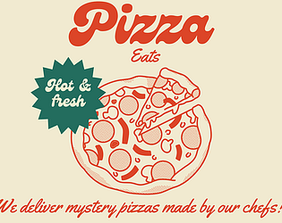
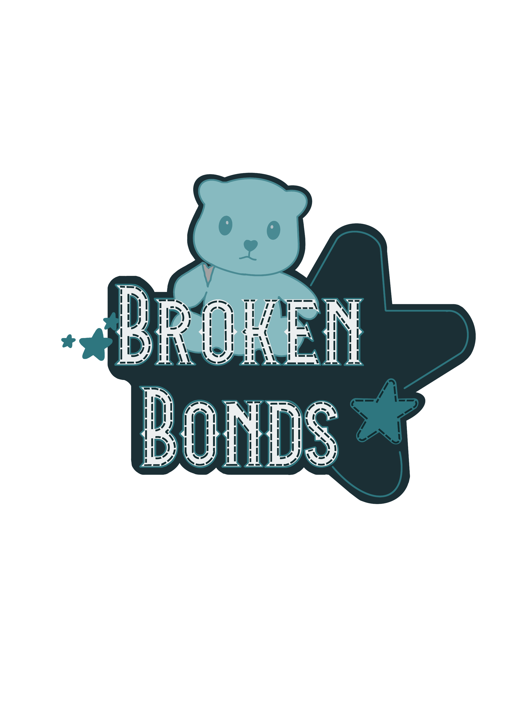
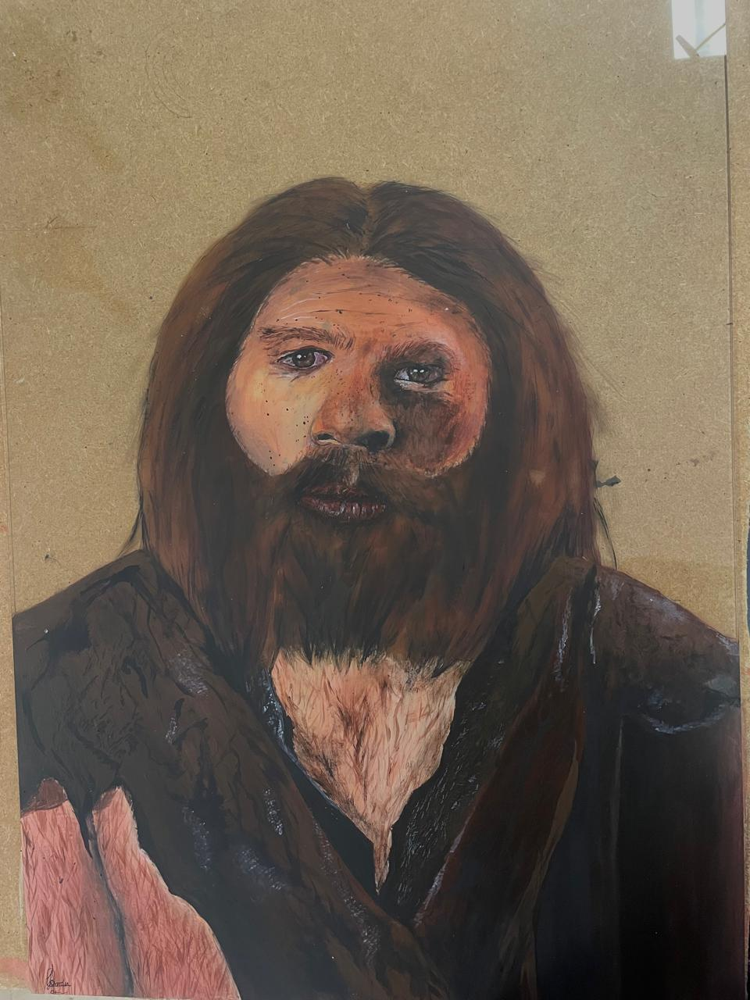
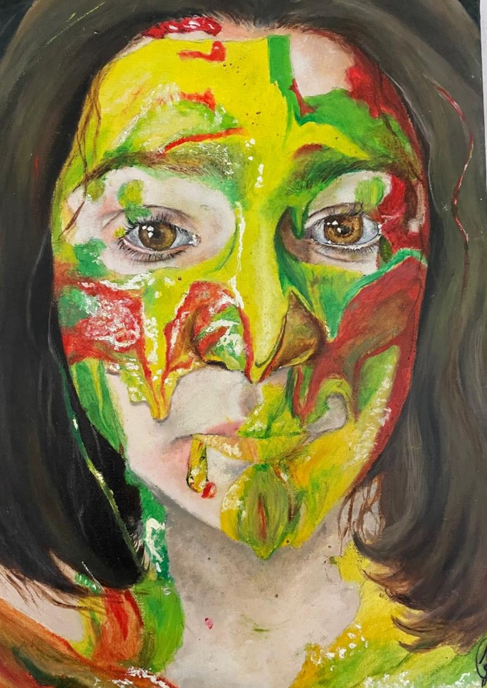
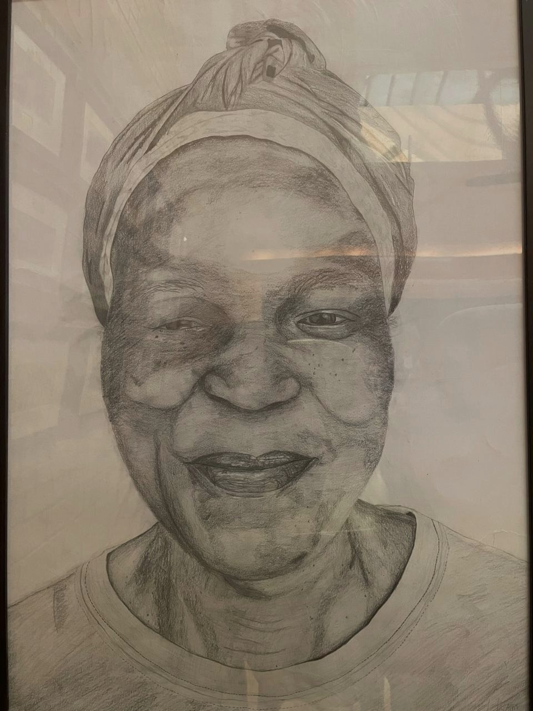
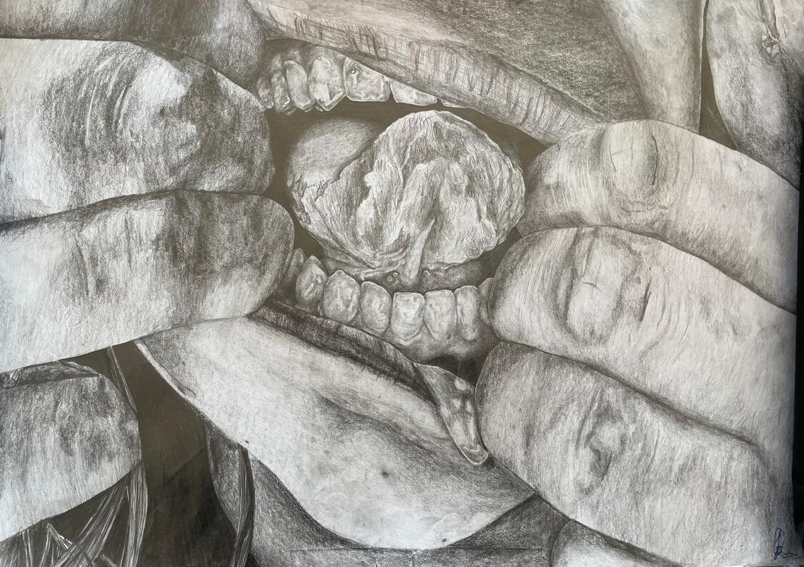
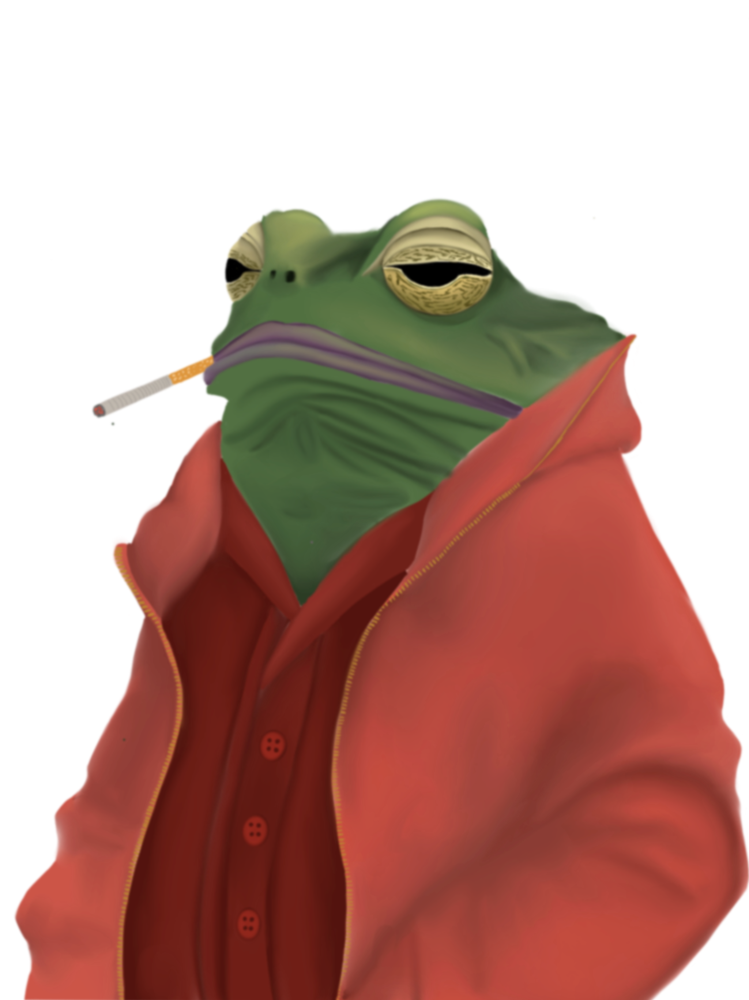
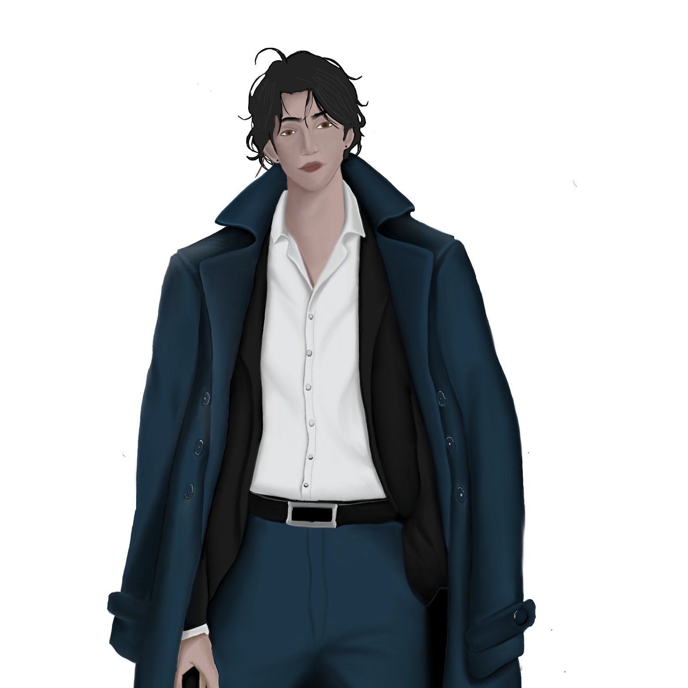

PORTFOLIO
Games
Step into the mess and make magic in CozyCorners. An isometric cleaning and decorating game where you transform chaotic homes into beautiful, personalized spaces. Whether you're vacuuming dusty floors or choosing the perfect wallpaper, every action is designed to be deeply satisfying and visually rewarding.
Step into a magical world where ancient rivalries come to life! In Leprechauna, you take on the role of a feisty leprechaun defending your pot of gold from waves of mischievous and magical fairies. Armed with enchanted golden coins, you’ll shoot, dodge, and strategize your way through action-packed levels in this 2D adventure.
In Pizza Eats, the dice are in charge — literally! This 2D roll-and-write computer game flips the script, putting your fate (and your pizza) in the hands of the dice. Each round, three numbers are rolled, and it’s up to you to use them wisely: pick your toppings, choose a slice, and move across the map to deliver your delicious creation. Strategize your moves, fill out your pizza, and race against your opponent to be the first to deliver hot, fresh slices to every house on the block. The first player to complete all deliveries wins — but with the dice calling the shots, anything can happen!

In Broken Bonds, step into the stitched shoes of a once-beloved teddy bear, torn from your rightful owner by a troubled brother and locked away in a room that feels more like a prison. From your small, plush perspective, navigate a first-person journey through shadows and memories as you search for a way out. Solve environmental puzzles and push your limits to return to the one who needs you most. But even once you find your way back, the journey isn’t over — you’ll need to mend your broken arm.
Paintings
This is a hand-painted reproduction inspired by the iconic visuals of Spirited Away, Studio Ghibli’s beloved animated film. Created as a heartfelt gift.
This painting of the neanderthal is apart of a mixed-media installation exploring the tension and intersection between science and spirituality. One panel features an acrylic painting of a Neanderthal on glass, while another displays a pencil drawing of Jesus. The third side, made of plain glass, acts as a visual threshold. When viewed from different angles, the installation isolates each worldview: one side highlighting religious devotion, the other focusing on human evolution. But when standing at the midpoint between science and faith, both figures come into focus, a deliberate invitation to consider the coexistence of belief systems.
Layers of Feeling is a portrait of a girl whose face is covered in thick, expressive paint — red, yellow, and green — each color symbolizing a distinct emotion: anger, happiness, and disgust. As the colors blend and bleed into one another, they form new, ambiguous shades that speak to the complexity of emotional experience. This painting captures the sensation of being overwhelmed, when emotions collide, overlap, and become difficult to separate.
Traditional Drawings
Stitched Silence is a mixed-media pencil drawing that explores the nature of overwhelming emotions. A girl, mid-scream, is frozen in a moment of raw expression, while her hand is being sewn to her face. The physical thread pierces the paper and skin alike, blurring the line between internal pain and external suppression.
Hands That Hold is a tribute to the quiet strength and overlooked presence of domestic workers. This artwork captures a moment of stillness, a glimpse into the life of someone whose labour often goes unseen but whose impact is deeply felt. This piece aims to restore humanity, dignity, and individuality to those whose stories are rarely centered.
Unspoken Flesh confronts the tension between enforced silence and hypersexualization. In the artwork, a mouth is held open by forceful hands with drool spilling from parted lips. The artwork explores how women are often silenced when speaking about their own sexual experiences, while simultaneously being reduced to objects of desire.

Study in Expression is a color pencil exploration of the mouth. Each set of lips, drawn in varying tones and textures, captures a different shapes of the mouth. Originally created as a technical exercise in mastering color and form, the piece naturally evolved into a celebration of diversity and subtle human expression.
Digital Drawings
Jack of Squirrels is a digital illustration created for a card game of strategy and battle. This powerful card features a squirrel clad in detailed knight’s armor and ready for combat. This tiny warrior symbolizes unexpected strength and cleverness.
Cold-Blooded Habits is a digital illustration that anthropomorphizes a frog dressed in a sleek jacket, smoking a ciggerate. The piece humorously blends human fashion and vices with the natural world, blurring the line between instinct and identity. The artwork invites viewers to reflect on how easily human behaviors can be projected onto the animal kingdom.
Caged Desires 1 is a digital artwork created for a story which reimagines power dynamics and challenges traditional gender roles through an unsettling lens. The figure of a man stands as both a symbol of vulnerability and subjugation. Within the context of the narrative, the piece explores the objectification of men, where they are locked in cages, dehumanizing their bodies, and reducing them to mere vessels for reproduction.

Caged Desires 2 presents a striking digital image of power redefined. In a world where men are no longer the dominant force, a woman stands at the forefront, wearing a simple white cloak and embracing a bald head, a stark rejection of conventional beauty standards. The piece challenges the established norms of beauty and power, exploring a society where the traditionally oppressed now wield control.
Logos
I was tasked with creating a logo for the beautiful lodge, Dunford Lodge. This features a bald eagle gripping a key in its beak, symbolizing both the freedom and security guests experience during their stay. The key signifies access to the natural beauty, serenity, and hospitality that define Dunford Lodge.
The logo for Canna Joint captures the essence of the brand, seamlessly blending the identity of the business with its core product: cannabis. After an in-depth process of reviewing various drafts and refining elements based on client feedback, the final design embodies both professionalism and approachability.
I was tasked with redesigning TAP MAP's logo. The redesigned logo incorporates the company’s core values of mining and consulting. Retaining the brand’s signature orange and black color scheme, the logo introduces key mining elements, a wheel and a pickaxe.
Calendar
For the company Little Kickers, a company focused on introducing young children to the joy of soccer, I designed a playful and interactive calendar that doubles as a creative activity. Centered around their key mascots, each month features line art illustrations that children can colour in themselves.